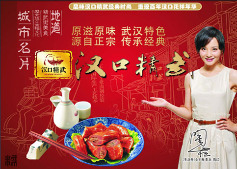

精武鸭脖（解放大道店）

| 门店地址： | 江汉区汉口解放大道新华路(近精武路)解放大道新华路(近精武路) | ||
| 门店电话： | 027-86778277 | 其他门店数量： | 22家 |
| 评分： | 125条评论 | |
| 共发布信息63条 | ||
商家介绍：
汉口精武鸭脖的口味众多，但都具有同一个特点，味道浓郁，香入骨髓！吃完包裹在骨头上的肉，千万不要错过藏在骨头缝里的肉，虽然不多，可是更美味！汉口精武的鸭脖，肉质香嫩滑腻，越嚼到骨头里味道越浓郁，越会让您欲罢不能！这与汉口精武鸭脖的选材是分不开的。汉口精武所选的鸭子是清朝皇宫御用贡品之一—白鹭鸭，这种鸭类品牌是所有制作卤味鸭脖的臻品。鸭脖虽说只是休闲零食，或者佐餐下酒的小菜，但是其营养价值也不容忽视。众所周知，鸭属凉性，常食之，配以辣椒、甘草、肉桂卤制等，性温而不燥，除湿去烦，开胃健脾。
汉口精武鸭脖的口味众多，但都具有同一个特点，味道浓郁，香入骨髓！吃完包裹在骨头上的肉，千万不要错过藏在骨头缝里的肉，虽然不多，可是更美味！汉口精武的鸭脖，肉质香嫩滑腻，越嚼到骨头里味道越浓郁，越会让您欲罢不能！这与汉口精武鸭脖的选材是分不开的。汉口精武所选的鸭子是清朝皇宫御用贡品之一—白鹭鸭，这种鸭类品牌是所有制作卤味鸭脖的臻品。鸭脖虽说只是休闲零食，或者佐餐下酒的小菜，但是其营养价值也不容忽视。众所周知，鸭属凉性，常食之，配以辣椒、甘草、肉桂卤制等，性温而不燥，除湿去烦，开胃健脾。
- <<
- >>